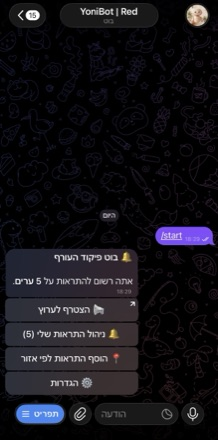
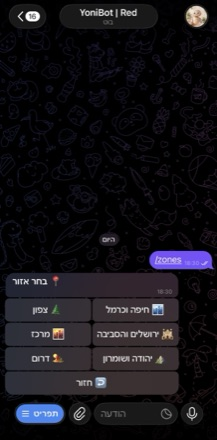
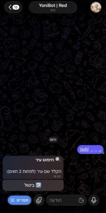
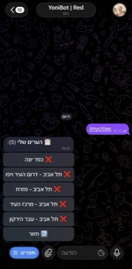
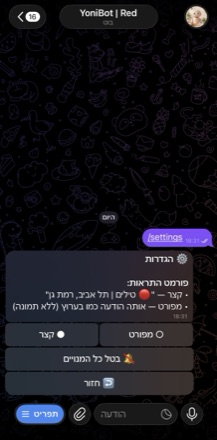

התראות IDF בזמן אמת — ישירות לטלגרם ולוואטסאפ, עם מפות ו-DM אישי
נתוני פיקוד העורף, מתעדכנים כל 2 שניות סביב השעון
זיהוי כפילויות, ניתוב לפי עיר ונושא, תורים חכמים
DM אישי לטלגרם, רק על הערים שבחרת, כולל מפה
ללא התקנה, ללא קוד
למתכנתים ו-DevOps
בחר מה מתאים לך — אפשר גם וגם

תפריט ראשי

בחירת אזור

חיפוש עיר

הערים שלי

הגדרות
קבל התראות ישירות לטלגרם או ל-WhatsApp — או הרץ instance פרטי משלך